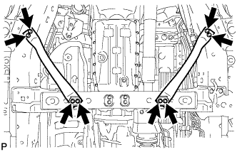
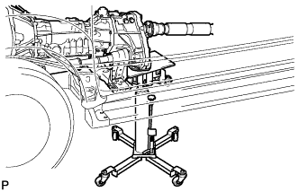
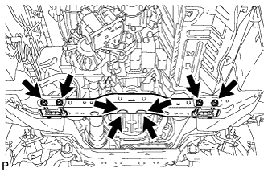
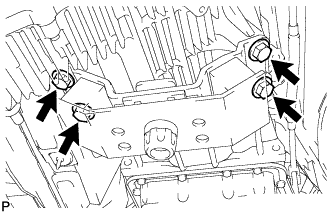
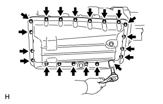
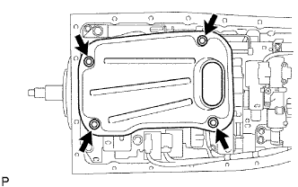
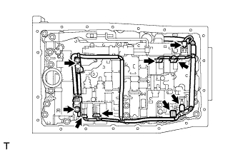
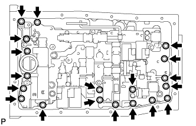
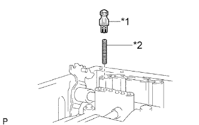

КОРПУС КЛАПАНОВ В СБОРЕ > СНЯТИЕ |
| 1. СЛЕЙТЕ ЖИДКОСТЬ ДЛЯ АВТОМАТИЧЕСКОЙ ТРАНСМИССИИ |
Снимите пробку сливного отверстия и прокладку, и слейте трансмиссионную жидкость.
Установите новую прокладку и пробку сливного отверстия.
| 2. СНИМИТЕ ЛЕВЫЙ И ПРАВЫЙ КРОНШТЕЙНЫ ЭЛЕМЕНТА ПЕРЕДНЕЙ ПОДВЕСКИ (для моделей с 1KD-FTV) |
|  |
Выверните 8 болтов и снимите левый и правый кронштейны элемента передней подвески.
| 3. СНИМИТЕ ПОПЕРЕЧИНУ РАМЫ № 3 В СБОРЕ (для моделей с 1KD-FTV) |
|  |
Поддомкратьте трансмиссию телескопическим гидравлическим домкратом.
|  |
Выверните 4 установочных болта задней подушки опоры двигателя.
Отверните 4 гайки и снимите 4 болта и поперечину рамы.
| 4. СНИМИТЕ ЗАДНЮЮ ПОДУШКУ ОПОРЫ ДВИГАТЕЛЯ № 1 (для моделей с 1KD-FTV) |
|  |
Выверните 4 болта и снимите подушку задней опоры двигателя с трансмиссии.
| 5. СНИМИТЕ МАСЛЯНЫЙ ПОДДОН АВТОМАТИЧЕСКОЙ ТРАНСМИССИИ В СБОРЕ |
|  |
Выверните 20 болтов и снимите масляный поддон и прокладку с трансмиссии.
Осмотрите частицы, содержащиеся в поддоне.
Снимите 4 магнита и с их помощью соберите стальные частицы. Внимательно осмотрите посторонние включения и частицы, имеющиеся в поддоне и на магнитах, чтобы определить, какому типу износа подвергается трансмиссия.
Сталь (магнитный материал): износ подшипников, шестерен и пластины сцепления
Латунь (немагнитный материал): износ втулки
| 6. СНИМИТЕ СЕТЧАТЫЙ МАСЛЯНЫЙ ФИЛЬТР КОРПУСА КЛАПАНОВ В СБОРЕ |
|  |
Выверните 4 болта и снимите сетчатый масляный фильтр.
Снимите кольцевое уплотнение с сетчатого масляного фильтра.
| 7. ОТСОЕДИНИТЕ ЖГУТ ЭЛЕКТРОПРОВОДКИ ТРАНСМИССИИ |
|  |
Выверните 2 болта и снимите 2 зажима датчика температуры.
Отсоедините 2 датчика температуры ATF.
Отсоедините 7 разъемов от электромагнитных клапанов.
| 8. СНИМИТЕ КОРПУС КЛАПАНОВ ТРАНСМИССИИ В СБОРЕ |
Выверните болт и снимите крышку пружины фиксатора и пружину фиксатора.
|  |
Выверните 19 болтов и снимите корпус клапанов.
|  |
Снимите пружину и корпус запорного шарика.
| *1 | Корпус запорного шарика |
| *2 | Пружина |